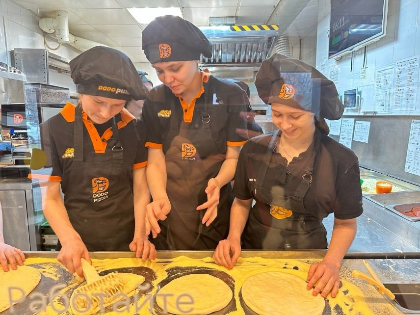
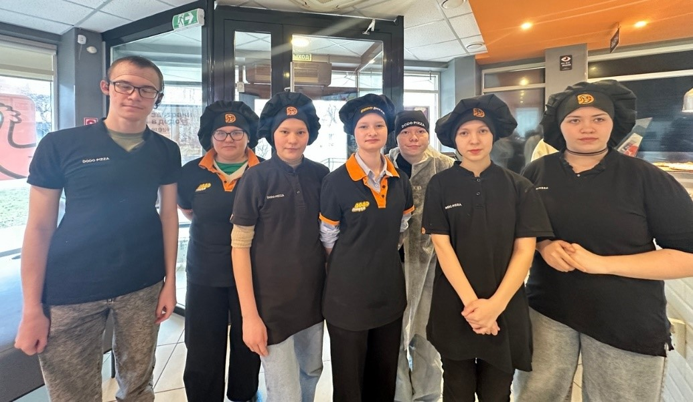

Экскурсия в Додо Пицца 2026
Студенты 1-го курса, обучающиеся по специальности «Поварское и кондитерское дело» посетили пиццерию «DоDо», где приняли участие в экскурсии и мастер – классе по приготовлению пиццы. Мероприятие стало значимым этапом в профессиональном развитии обучающихся: оно позволило увидеть работу предприятия общественного питания изнутри и применить знания на практике. В рамках экскурсии обучающиеся: – познакомились с организацией работы пиццерии, увидели зоны приёмки сырья, подготовки ингредиентов, приготовления и выдачи заказов; – понаблюдали за слаженной работой пиццамейкеров, оценили скорость их действий. Кульминацией мероприятия стал мастер класс по приготовлению пиццы под руководством опытного пиццамейкера. “Самым сложным оказалось раскатать тесто так, чтобы оно не порвалось и было равномерной толщины. Но когда получилось, это было настоящее удовлетворение”, – рассказала студентка Анастасия. “Я узнала много нового о том, как важно правильно распределять начинку, чтобы она не сползала и равномерно пропекалась. И, конечно, попробовал свою пиццу – это было невероятно вкусно!” – с улыбкой отметила обучающаяся Мария Студенты выражают искреннюю благодарность коллективу пиццерии «ДоДо» за тёплый приём, профессионализм и готовность делиться опытом.

